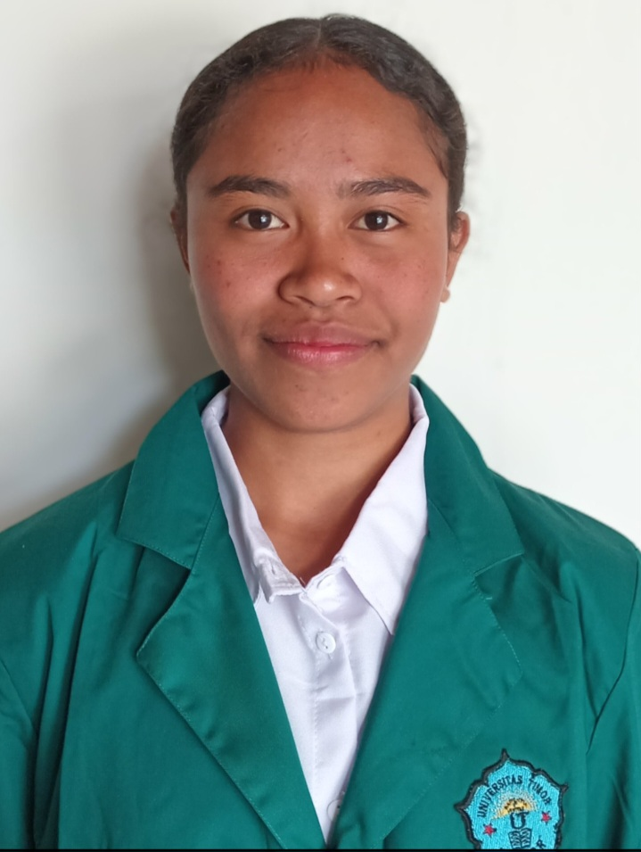

|
 |
Identitas Diri
|
Saya adalah mahasiswa Program Studi Teknologi Informasi Universitas Timor. Saya memiliki ketertarikan terhadap perkembangan, khususnya dalam bidang Web Development. Saya memiliki motivasi untuk terus belajar dan mengembangkan kemampuan dalam bidang teknologi informasi agar dapat memberikan manfaat bagi masyarakat.
Bidang yang paling saya minati adalah Web Developer karena saya ingin mampu membuat website yang menarik, informatif, dan bermanfaat.
| No. | Kode MK | Nama Mata Kuliah | SKS |
|---|---|---|---|
| 1 | TI201 | Pemrograman Web Dasar | 3 |
| 2 | TI202 | Basis Data | 3 |
| 3 | TI203 | Organisasi dan Arsitektur Komputer | 3 |
Target saya selama menempuh pendidikan di Program Studi Teknologi Informasi adalah meningkatkan kemampuan dalam Pemrograman dan Pengembangan Teknologi. Saya berharap dapat menjadi seorang Web Developer yang mampu menghasilkan aplikasi web yang bermanfaat bagi masyarakat.
Kunjungi website resmi Universitas Timor
Silahkan mengisi form berikut jika ingin menghubungi saya